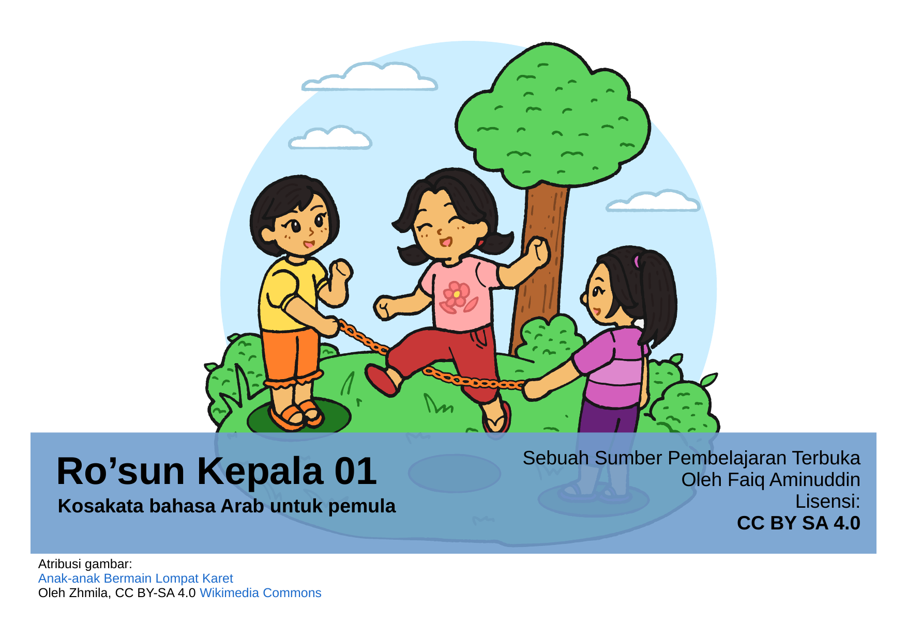
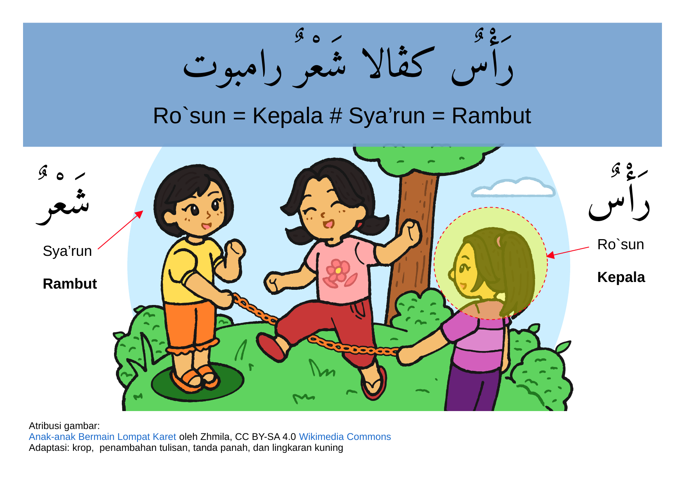
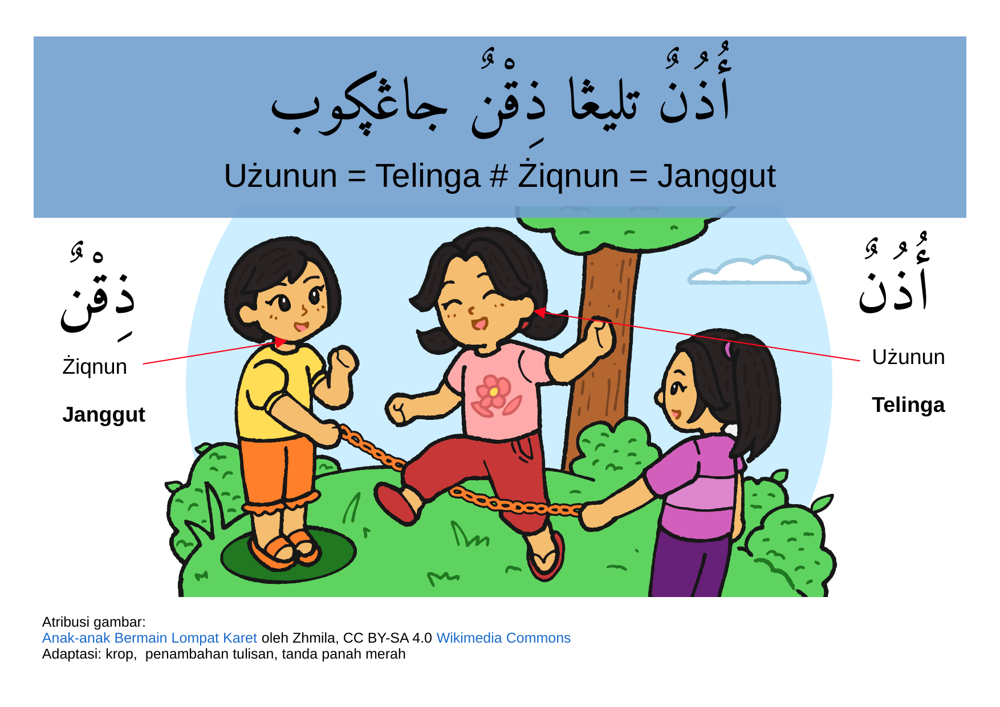
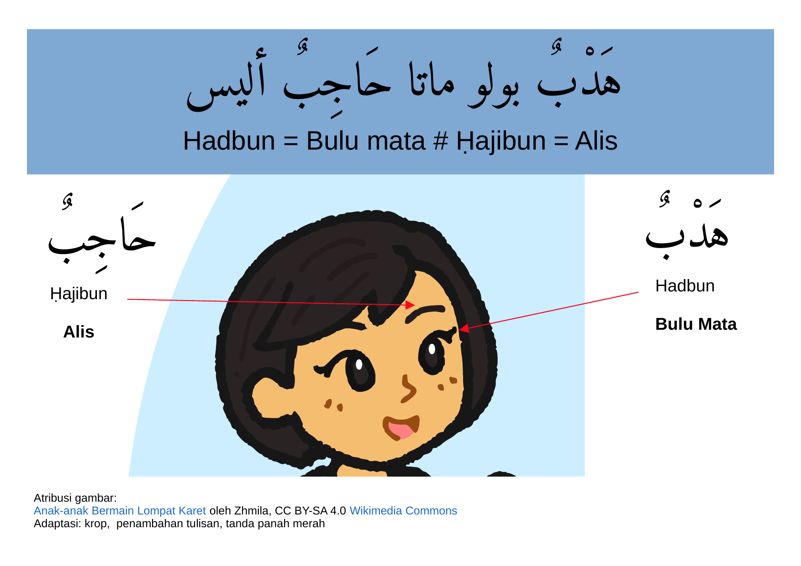
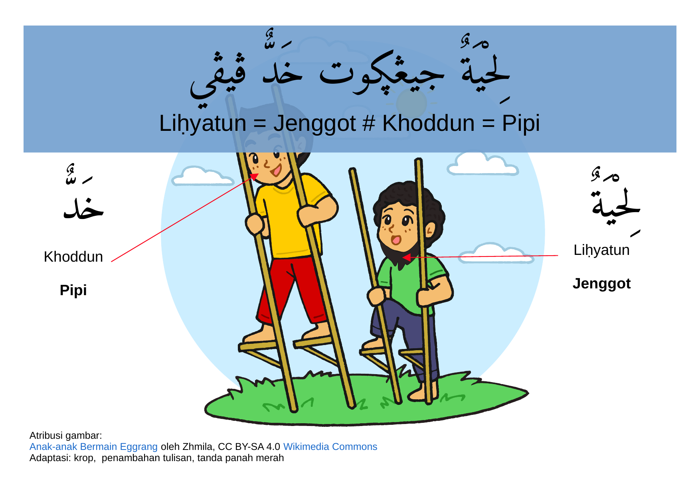
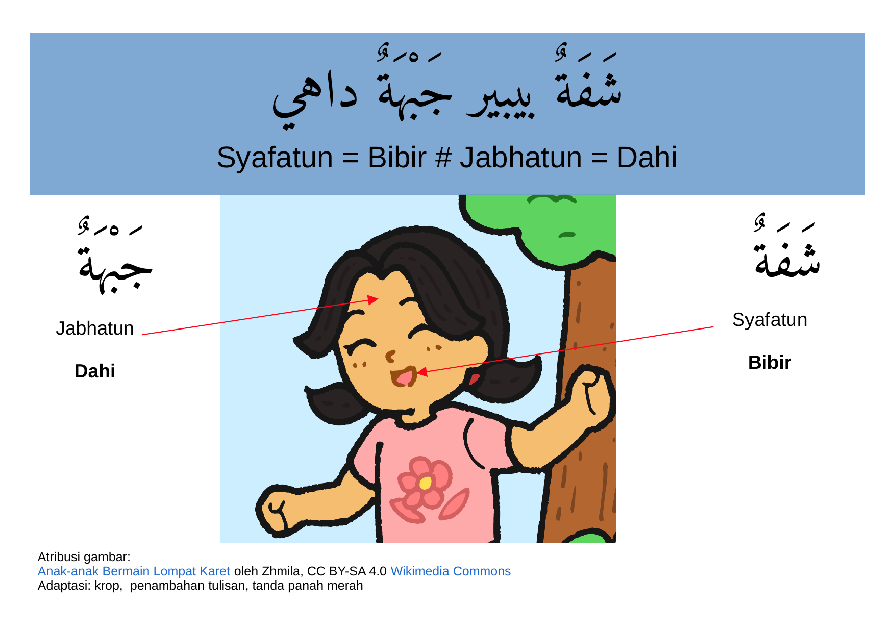
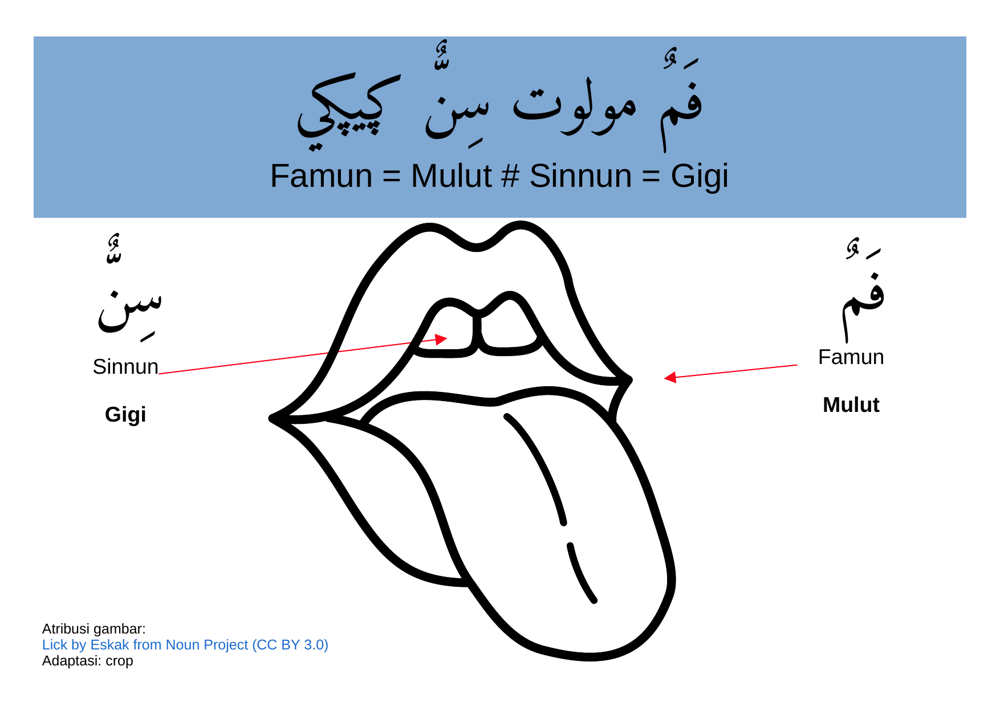
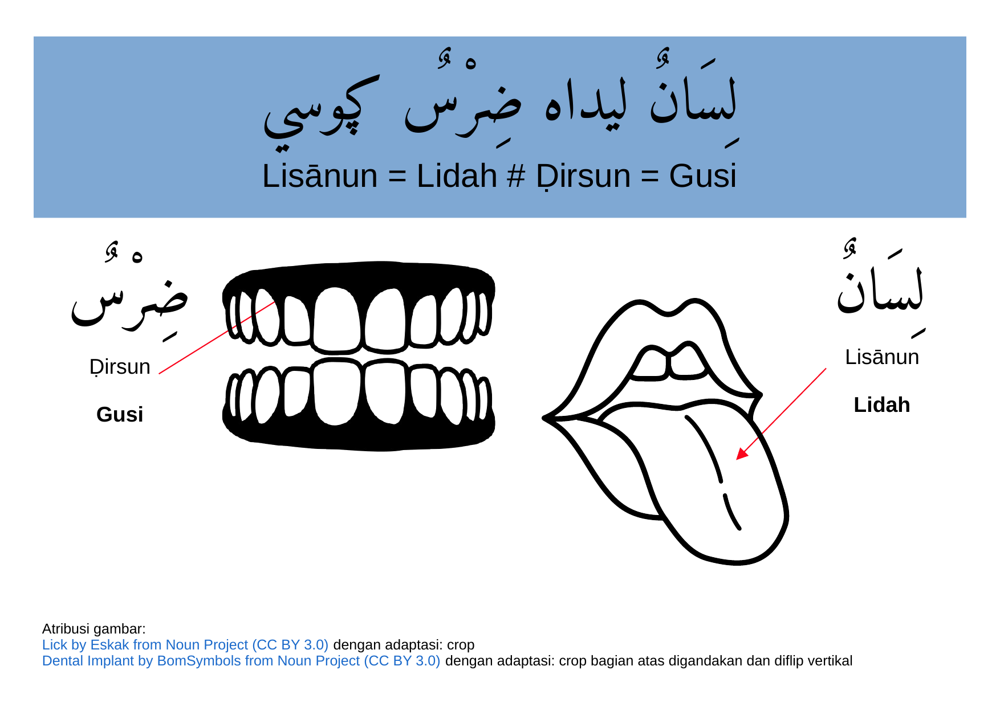
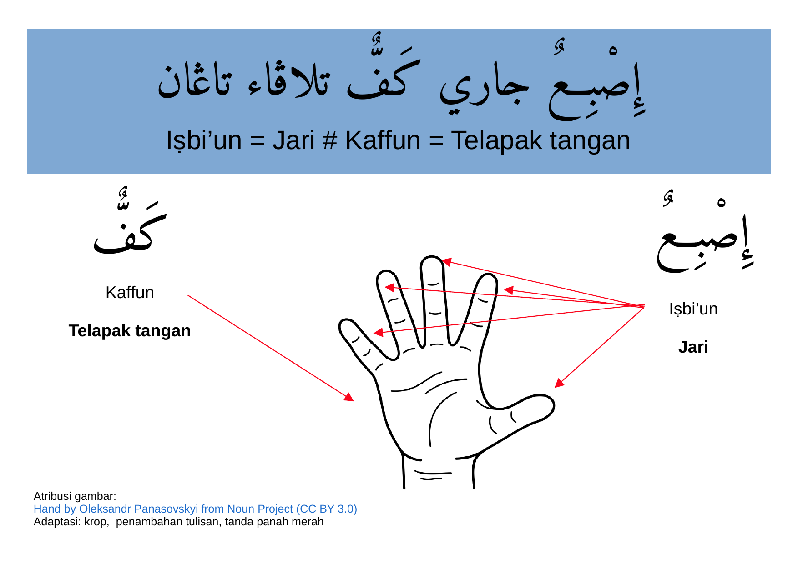
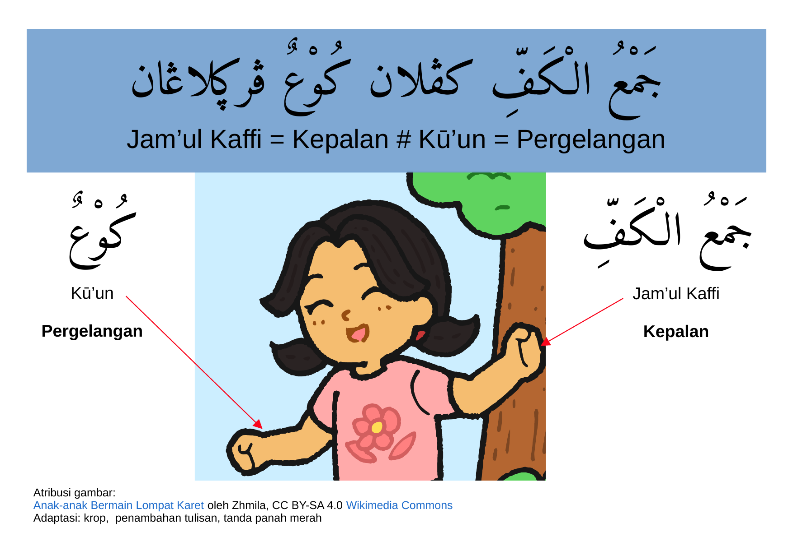

Ro’sun
Kepala 01
Kosakata bahasa Arab untuk pemula
Sebuah Sumber Pembelajaran Terbuka oleh Faiq Aminuddin
Lisensi: CC BY SA 4.0
Sumber Pembelajaran Terbuka ini kami dibuat dalam beberapa versi; HTML, Video dan PDF.
Sumber Pembelajaran Terbuka ini berisi;
Gambar-gambar dari Wikimedia Commons
Lirik nadhom/lagu yang ditulis dengan huruf Hijaiyah dan Pegon. Bahasa Arab ditulis dengan huruf Hijaiyah sedangkan
Bahasa Indonesia (artinya) ditulis dengan huruf pegon
Untuk mempermudah pengguna, kami tambahkan teks transliterasi dengan huruf latin.
Penulisan trasliterasi Arab-Latin merujuk pada keputusan bersama (SKB) Menteri Agama
dan Menteri Pendidikan dan Kebudayaan R.I. Nomor: 158 Tahun 1987 dan Nomor: 0543b/U/1987.
Latihan/Kuis
5. Pada bagian akhir kami sertakan daftar Atribusi, lisensi dan rujukan
بِسْمِ اللهِ الرَّحْمنِ الرَّحِيْمِ
Bismillāhi roḥmānir roḥim
اَلْإِنْسَانُ وَأَعْضَاءُ الْبَدَنْ
مانوىسييا دان أڠڮوتا بادان
Manusia dan Anggota Badan

رَأْسٌ كڤالا شَعْرٌ رامبوت
Ro`sun = Kepala # Sya’run = Rambut

أُذُنٌ
تليڠا ذِقْنٌ جاڠڮوب
Użunun = Telinga # Żiqnun = Janggut
عَيْنٌ ماتا صَدْغٌ ڤليڤيس
‘Ainun = Mata # Ṣodgun = Pelipis

هَدْبٌ بولو ماتا حَاجِبٌ أليس
Hadbun = Bulu mata # Ḥajibun = Alis

لِحْيَةٌ جيڠڮوت خَدٌّ ڤيڤي
Liḥyatun = Jenggot # Khoddun = Pipi

شَفَةٌ بيبير جَبْهَةٌ داهي
Syafatun = Bibir # Jabhatun = Dahi

فَمٌ مولوت سِنٌّ ڮيڮي
Famun = Mulut # Sinnun = Gigi

لِسَانٌ ليداه ضِرْسٌ ڮوسي
Lisānun = Lidah # Ḍirsun = Gusi
كَتِفٌ باهو يَدٌ تاڠان
Katifun = Bahu # Yadun = Tangan

إِصْبِعٌ جاري كَفٌّ تلاڤاء تاڠان
Iṣbi’un = Jari # Kaffun = Telapak tangan

جَمْعُ الْكَفِّ كڨلان كُوْعٌ ڨرڮلاڠان
Jam’ul Kaffi = Kepalan # Kū’un = Pergelangan
Pilih jawaban yang benar:
Anak-anak Bermain Lompat Karet oleh Zhmila, CC BY-SA 4.0 Wikimedia Commons
Anak-anak Bermain Eggrang oleh Zhmila, CC BY-SA 4.0 Wikimedia Commons
Lick oleh Eskak, CC BY 3.0, Noun Project
Dental Implant oleh BomSymbols, CC BY 3.0, Noun Project
Hand oleh Oleksandr Panasovskyi, CC BY 3.0, Noun Project
Roksun Kepala 1 oleh Faiq Aminuddin, CC BY 4.0, Wikimedia Commons
Ihsan, S. et al (1995). Pedoman Transliterasi Arab Latin Keputusan Bersama Menteri Agama Dan Menteri Pendidikan Dan Kebudayaan Republik Indonesia Nomor : 158 th 1987 Nomor : 0543 b/U/1987 . Jakarta: Badan Penelitian dan Pengembangan Agama Departemen Agama RI.
Abu Fawwaa, HAM. Sidad (tt), Nadhom Lughoti Kumpulan Mufrodat Bahasa Arab. Demak
https://nawaksara.id/downloads/al-itqan/